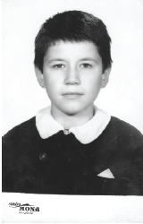
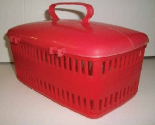

Beyaz değil, siyah deli gömleği...
Siyah Önlük. Maksadı zengin-fakir ayrımını ortadan kaldırmak olan, daha sonra renkler her ne kadar değişikliğe uğramış olsa da bizim nesili acılardan acılara sürükleyen bir garip nesne. Ekonomik eşitsizlik ortadan kalksın, daha doğrusu belli olmasın diye yapılan bu tek tip model önlükler farklı kumaşlarla farkını göstermiştir ama bu, o yaştaki çocukların umurunda olmamıştır. Sadık arkadaşı beyaz yaka ile güzel bir ikili oluşturan bu siyah önlükler, öğrenciye bir ciddiyet bir ihtişam katardı. Modelleri çok saçma, giyimi zordu.
Çocuklar koşup oynarlar, arkasında ne için takıldığı belli olmayan kuşakları yırtılırdı. Yakalamaç oynarken bu kuşak muhakkak kopar, birkaç kez kopmadan sonra ise dikilecek durumu kalmaz ve önlük kuşaksız giyilirdi. Kız çocuklarında kuşak ön taraftaydı. Dolayısıyla yakalamaç oynarken onları yakalamak, geriye doğru koşamadıklarından sebep, zor olurdu.
Pamuklu kumaştan yapılanlar genelde tercih edilendir. Satene benzer kumaş kullanılanları da vardır.

Bu önlükler, zamanın kara tahtası ve tebeşirler yüzünden çok kötü durumlara düşmüştür. Üzerine gelen tozlardan dolayı izler olurdu ve sürekli yerlere düşmeyi, yuvarlanmayı adet edinmiş çocukların önlüklerinde bu toz izlerine sıkça rastlanırdı. Sürekli olarak o cilalı tahta sıralarda oturmak ve sırtınızı dayamak yüzünden, sırt ve popo kısmı bir süre sonra parlamaya başlardı.
Aşağıda hikayesini okuyacağınız şu muhabbet, o zamanlar bile isyankar bir ruh halinde olan ve her şeyi öğrenmek isteyen ve “Ben bunlardan daha akıllıyım aslında”cılardan birinden gelebilecek ve hemen her yerde rastlanabilecek, benim de başımdan geçmiş bir hikâyeden bir bölümdür:
- Öğretmenim! Bu önlükler neden siyah renk?
- Kış günlerinde ışığı çeksin, sıcak tutsun diye.
- Öğretmenim! O zaman yazın çok sıcak olmaz mı?
- Aptal çocuğum, yazın okullar kapalı değil mi?
- Hee!
Önlükten sonra en yakın arkadaşı olarak nitelenen yakadan bahsetmek lazım.
Beyaz Yaka. Bu yakalıklar, neden takılır, ne gerek vardır bilinmez. Sadece takılır.
O kocaman önlük düğmelerinin arasında en üst kısımda, diğerlerine inat, düğmelerin en küçüğü bulunur. Yakanın iki ucunda da düğme için delik mevcuttur ve bunlar o kısımda birleşerek, yaka takılmış olur.
Çeşit olarak karton gibi bir malzemeden boğazları kesenlerin yanında, yumuşak kumaştan olanları da vardır. Anneleri hasta eden bir durumdur bu. Genelde o yakaların boyna gelen kısmı her zaman kirli olur. Çünkü çocuklar koşup terlerken o yaka bundan nasibini alır.
Karton yakalar ya yaka yıkamaktan bıkmış ya da biraz daha fazla bıkmış kadınların çocuklarına tercih ettiği modeldir. Onun haricinde dantel yakalar vardır ki, bunu kız çocuklarının anneleri tercih eder. Yakanın en güzel hali, kopmuş halidir. Bir de tek işe yaradığı zaman 10 Kasım günüdür. Neden diyecek olursanız; o gün yakalar, yas tutuşu simgelemek adına siyah önlüğü yalnız bırakırdı.
Okullarda yemek yeme alışkanlığını geliştirmek adına yine tektip bir yeme-içme kültürü oluşturulmaya çalışılmıştır. Bundan nasibini alan Beslenme Çantası’nın dış görünüşü ve içeriğinden bahsetmek istiyorum. Cinsiyete göre renklerinin yanında, o zamanın en meşhur çizgi film kahramanlarının resimleri dış kabını süslerdi. Genellikle peynir, zeytin, yumurta gibi kahvaltılık cinsinden yiyeceklerin ve elma, portakal gibi meyvelerin bulunduğu kutu şeklindeki çantadır.

Salam, sucuk, gibi yiyeceklerin ve muz gibi meyvelerin bulunması öğretmenler tarafından yasaklanırdı. İçinde salamın veya diğerlerinin olmaması, gene zengin-fakir ayrımı olmasın diyedir. Çocukların canı çeker, aile bunları almaya güç yetiremez diye düşünülerek yapılmıştır.
Beslenme saati gelince bu çantalar açılır; etrafa kesif bir yumurta kokusu yayılırdı. Bu koku yıllarca hafızamızda yer eder ki, koku hafızası en güçlü hafızadır. Bazıları köfte, patates, bazıları kıyma kavurması getirirdi. İlkokul üçüncü sınıfa giderken yanımda oturan Göksel diye kocaman ağzı olan bir arkadaşım vardı. Sürekli ekmek içinde kıyma kavurması yerdi. Bir canım çekerdi, en sonunda dayanamadım bir defasında istemiştim, sağ olsun o da vermişti. Ondan sonra ben de anneme bundan yaptırdım, ama hiç o kadar tatlı gelmemişti.
Ortam böyle kötü kokularla anılırken, bir küçük kutuda sabunlu bir de elbezi bulunur, bunla eller, ağız silinirdi. Beslenme çantaları genelde plastikten yapılmadır. Muhakkak bir yerlerinde delikler olurdu. Bu deliklerin yapılmasının sebebi: İçerisine konan yiyeceklerin bazen sıcak olma ihtimalindendir.
Kullanılan bir başka ürünse Kalemtıraş’tır: Bunun babası, demirden yapılma, bir müzik kutusu kadar büyüklükte olan, sahibine prestij kazandıranlardır. Bunlar genelde müdür odalarında bulunurdu. Zaten okul çantalarında taşımaya müsait değildi yapıları.
Çok çeşitli kalemtıraşlar vardı. Hayvan kafasından model alınarak yapılırdı bazıları ya da bir çiçek gibi olurlardı. Ben klasik modelleri yani yuvarlak ya da dikdörtgenleri severdim ve onları kullanırdım. Bazıları da hiçbir zaman bu malzemeyi almaz sürekli “kalemtıraşı olan var mı?” diye sorar dururlardı.
Bu soru arkadaşlara sorulurken, sınıf ortamında kalem açmak için bile öğretmenden izin istenirdi. Aslında burada niyet başkaydı. İzin alındıktan sonra kapıya yakın olan çöp kutusunun yanına gidilip açılırdı kalemler. Hem sınıfa farklı bir açıdan bakmak, hem o sıkıcı ders ortamından uzaklaşmak hem de kalemi açarken arkadaşlarına sırıtmak için yapılırdı bu iş. Sonra öğretmen niyeti anlar ve “Otursana aptal çocuğum,” der ve siz de sıranıza dönerken daha da fazla sırıtarak yerinize otururdunuz.
Pelikan markasının ürettiği yeşil renkli, dikdörtgen şekilli ve uzun tarafı eğimli bir çeşit Silgi vardı. Hâlâ vardır. Kötü tadı dolayısıyla yemeye kemirmeye pek uygun değildi. Sert yapısıyla da kağıtları yırtardı ara sıra. Sahteleri silerken alta yeşil rengini bulaştırırdı. Genelde erkekler Pelikan’ı kızlarsa kokulu ve üzerinde Arı Maya gibi resimli olanlarını kullanırdı. Bu silgiler önce kaybolmasın diye sonra da ufaldığı için ortasından bir ip geçirilerek boyna takılırdı.
Mürekkep Hokkaları iİlkokul yıllarının unutulmazlarından bir malzemedir. Hokka-divit ikilisi, ne akla hizmet kullanıldığını o zamanlar bir türlü çözemediğimiz, ama o hokkayı ters çevirip de, içindeki mürekkebin dökülmemesine hayret ettiğimiz, daha ziyade oyuncak gibi gördüğümüz bir aletti. Mürekkep dökülmezdi çevirince, ama biz genede o mürekkebi kalemini hokkanın içine daldırıp, bolca kullanarak, pislik yapmaya çalışırdık. Elimiz yüzümüz boya olur, kâğıtlar boyanın fazlalığıyla ıslanır, kıvrılırdı.
Pastel boyanın alternatifi olarak Nova Color çıkmıştı, ama onun kadar iyi boyamıyordu. Ne kuru boya ne de pasteldi. Güzel kokardı. En iyi özelliklerinden biri ise yenmeye uygun olmasıdır. Bunu yaptıran şey ise, kutularında bulunan kalemi yiyen çocuk resmidir. Yenmesinin dışında kalemtıraşla soyarken, bir gülü andıran artıkları çıkar, özellikle kızlar bu boyaları pamukla beraber kullanarak, hoş renkler elde ederlerdi. Ne fayda! Kolay kırılabilen ve elde tutulması zor olan bir ürün olarak aklımda kalmış.
Daha önceden de söylemiş olduğum gibi, bazı ürün isimleri, marka adıyla anılır. Örnek margarinin adı “Sana”, kâğıt mendilin adı “Selpak”tır.
Ufak tüplerdeki bu yapıştırıcının adı da “Uhu”dur. Piyasaya ilk olarak çıkan, pratik ve kolay ulaşılan bir ürün olması sebebiyle, sarı tüp içerisindeki her yapıştırıcının adı, (sonradan 404 diye marka çıkmıştır ancak) Uhu olarak kalmıştır.
Bu malzemelerin normal kullanım alanları dışında kullanıldığı bazı sahneler vardır. Örnek olarak, burun pisliği ve “Atlantis’ten Gelen Adam”a benzemeyi verebilirim. Bu yapıştırıcılardan bir miktarı ele dökülüp, yuvarlanırsa rengi değişmeye başlar, kıvamı ve rengi burun pisliğini andırır. Meydana getirilen bu madde, en yakındaki bir kızın üzerine atılırsa, bu yapılan şakanın tadına doyum olmaz. Parmaklar arasına bir miktar sürmek marifeti ile meydana gelen durumda ise parmaklar açıldığında ortaya çıkan görüntü, o zamanların meşhur dizisi, “Atlantis’ten Gelen Adam”ın ellerine benzerdi.
Bir başka kullanım alanı da yanağınızdır. Yanağa bir miktar yapıştırıcı sürülür, etli kısma gelmesine özen gösterilir ve bu iki yanak birbirine yapıştırıldığında yüzünüzde bir yara varmış gibi bir görüntü ortay çıkar. Bu da daha önce yapılmış olanlardan bir örnektir.
Seksenin sonlarına doğru ülkemize giren bir başka yapıştırıcı da Pritt’tir. Daha ziyade zengin görüntüsü verir, altta bulunan vida benzeri bir mekanizma ile döndürdükçe yukarı çıkan bu hoş kokulu yapıştırıcı, diğerlerine nazaran daha güzel kokar, ancak çoğunlukla onlar kadar iyi yapıştırmazdı. Ama havalıydı Pritt kullanıyor olmak.
Dünya tarihinin en basit çizgilere sahip, en uyumlu, düzgün, ahlaklı kahramanı. Huzurlarınızda Cin Ali...
İlkokul kitaplarında bir seri olarak yayınlanmış olup çocuklara işte iyi bir çocuk böyle olunuru anlatmak ve okumayı öğretmek için yapılan bir çalışmadır. Hiçbir zaman cinliğini göremediğimiz, ama dişlerini fırçalayan, hayvansever, kitap okuyan, okula giden bir çöp çocuk. Sadece kendisi çöp değil, babası anası da, arkadaşları, hayvanları da çöpten.
Bunları birbirinden ayıran özellikleri; babasında bıyık ve kravat, atın koca kafası, kuzusu aynı, fili aynı... Cin Ali sürekli top atar, tutar, kırbacı ile topaca vurur, o fili yıkar fil onu tıraş eder dururdu.
İlkokul yıllarımızda her ay sınıfımıza parası bizden alınmak üzere bir dergi gelirdi. Her ayın dergisinde konular farklı olurdu. Ve yanılmıyorsam saman kağıda basılır, fakat renkli resimler de kullanılırdı. Sonra bu Ünite Dergileri de diğer bazı şeyler gibi ortadan kalktı.
Öğrenci ve öğretmen arasındaki en azılı düşmanlığı yaratan konuların başında Kılık-Kıyafet Yönetmeliği gelir. Bunun yanında ya da az karşısında olan öğretmen ve yönetim kadrosu ve %99,9 karşısında saf tutan öğrenciler, sürekli ve yıllar boyu süren kavgalar yaşadılar.
Bu yollardan ben de geçtiğim ve belki de en ön saflarda yerimi bulduğum için olacak, çok hassasımdır. Tabii konu seksenli yıllar, ama bizim zamanımızda öyle ülkede herhangi bir olay falan olmadığı için, kendimizi bu yollarla ifade edip, belki de delikanlı tarafımızı bu şekilde açığa çıkarabiliyor, enerji fazlamızı bu yollarla harcıyorduk.
Nice savaşlar verildi, nice saçlar (tren yolu!) kesildi okula giriş sıralarında. Çoğu zaman okul duvarlarından atladık, kimi zaman kömürlükten girdik. Kravat görünmüyormuş diye bisiklet yaka giyemedik. O kadar sıcak havalarda ceketi çıkartmamıza bile izin vermediler, terin suyun içinde kaldık. Değişik renkte bir şey giysek fırça yedik, hatta değiştirelim diye evlere gönderildik. Burada anlattıklarım az bile, ama ne öğretmenler kıyafetlere, saçlara karışmaktan vazgeçtiler, ne öğrenciler pes etti.
Benim bu konuda en güzel anım şudur: Okulumuza yeni bir müdür gelmiş ve asayişi o derece berkemal yapmaya heves etmişti ki sormayın.
Çeşitli yıldırma politikaları ve hat safhada güvenlikten sonra, bir kısım öğrencinin okul içinde yine de ahlaka mugayir vaziyetlerde dolaştıkları tespit edilince, güvenlik iki katına çıkarılmıştı. Duvarlar yetmemiş, üstüne 1 metrelik de tel örgü eklenmişti. Halimiz öğrenciden ziyade mahkumlara benziyordu. İşin doğrusu süreli mahkumlardık. Yani okulumuzun etrafından kuş uçurtulmayacak kıvama gelinmişti. Ben de boş durmadım, dövizler hazırlayarak, tel örgülere eşit aralıklarla dört beş tane astım.
Okulu hapishaneye çevirmişlerdi gerçi ama ben dövizlere “ÖĞRENCİLERE KABUKLU YEMİŞ ATMAYIN! İ.O.K.T” diye yazarak, hayvanat bahçesine benzetmiştim. İOKT’nin açılımı aslında ismimin baş harfleriydi, ancak sanılan daha farklı bir şeydi elbette.
Cuma günü gelmiş, İstiklal Marşı okunacaktı. Müdür elinde mikrofon varken rutin uyarıları yaptı ve bir kısmını aynen aktarıyorum: “Okulumuzun etrafında bazı bölücü örgütler peydahlanmış, bu teröristler duvarlarımıza muzır neşriyatlar asmakta, öğrencilerimizi kötü yollara çekmeye çalışmaktadırlar...” diye devam eden bir konuşma yapmıştı. Ben ve benim yaptığımı bilen arkadaşlarım o sırada gülmemek için kendimizi zor tutmuş, daha sonra bulduğumuz ilk fırsatta kahkahalarımızı koyvermiştik. Tek başıma bir terörist olmaktan ziyadesiyle keyif almıştım.
Saç kesimleri de bu uygulamadan nasibini almış, erkekler uzun saçtan, kızlarsa toplanamayacak derece kısalıkta ya da uzunluktaki saç modelinden mahrum kalmışlardı. Erkekler saçlarını kazıtamıyorlardı da. Yani, herkes cinsiyetine göre tepeden tırnağa aynı olmalıydı.
Biz bu tür davranışların nasıl olsa üniversiteye girince biteceğine inandığımız için, bir an önce şunlar bitse de üniversite ortamında özgürce dolaşsak, saç sakal uzatsak, küpe, başörtüsü taksak diye hayal kurardık.
Nihayetinde üniversiteye girdik, ama orada da gördük boyumuzun ölçüsünü.